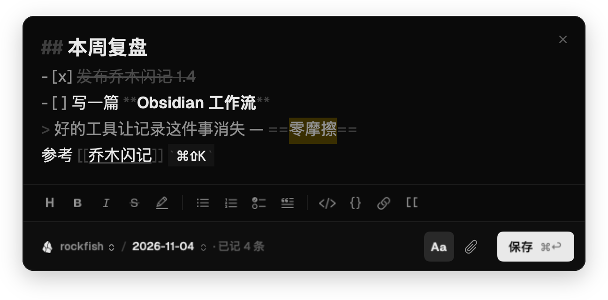
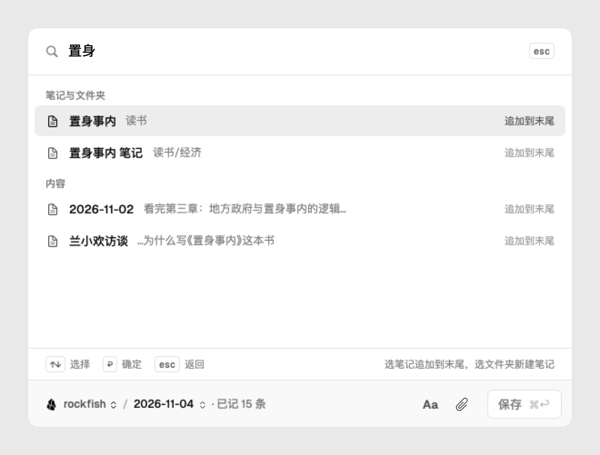
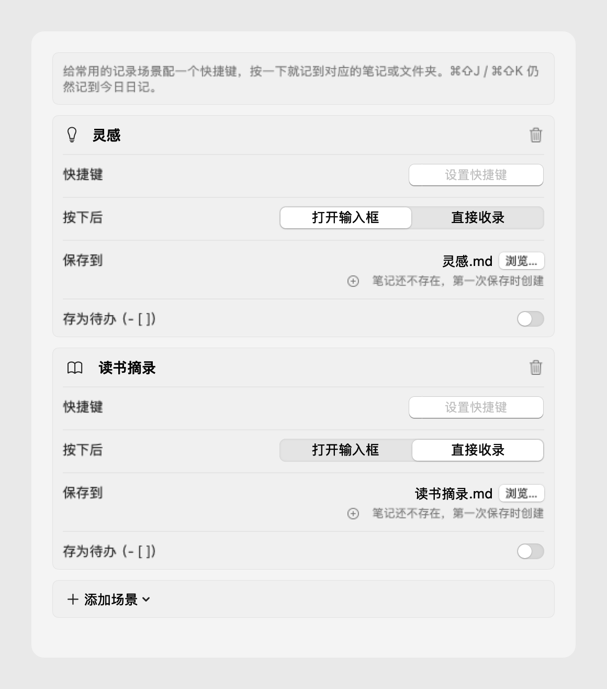
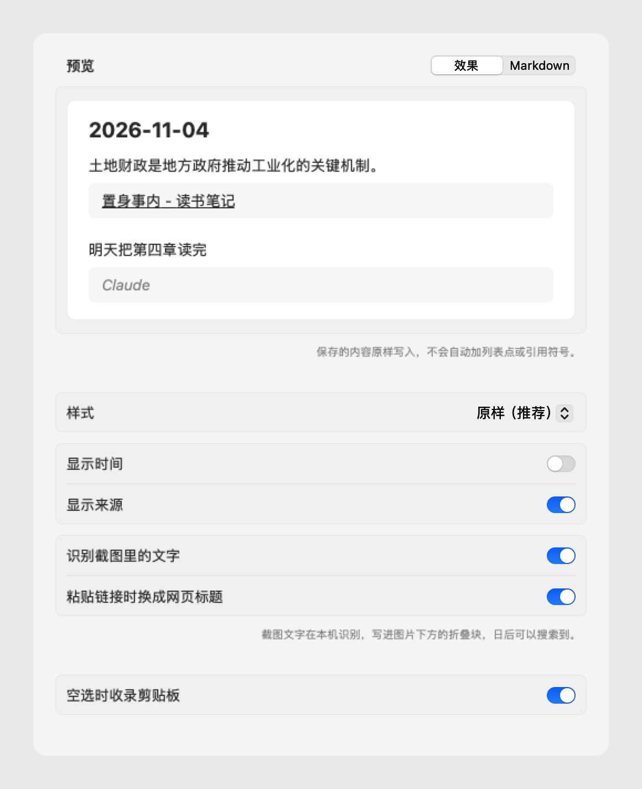

早上跑步时想到：好的工具，应该让「记录」这件事消失。
08:12
地方政府不只是“守夜人”，而是深度参与经济发展的“运动员”。土地财政让基础设施得以快速推进，也埋下了债务的隐患。
早上跑步时想到：好的工具，应该让「记录」这件事消失。
08:12
看到一句好话、截了一张图、冒出一个念头。等你走完下面这几步，那个念头已经凉了。
选中的内容连同标题和链接，已经在今日日记的末尾。你不用离开当前窗口。
在任何地方弹出一个输入框。写字、粘贴截图、拖入图片和视频，按 ⌘↩ 存进今日日记；按 Esc 关掉，草稿还在。
# 补全你仓库里已有的标签不弹窗。网页、PDF、电子书、代码里选中的内容，或 Finder 里选中的文件，直接存进去。什么都没选，就收录剪贴板或刚截的屏。
不擅自加列表点和引用符号，复制的是什么就存什么。出处单独写在下一行，日后回看知道它从哪来。
浏览器、微信、PDF、Apple Books、Kindle、编辑器、终端……能选中文字的地方都能收录，并认出是哪个 App。
最多 6 个场景。选一个预设、按下快捷键、指向一篇笔记或文件夹，三步就能用。
内置灵感、待办、读书摘录、稍后读、工作日志五个预设，也可以自己起名。每个场景可以打开输入框，也可以直接收录。
默认存进今日日记。想换地方，⌘P 搜任意笔记和文件夹：模糊匹配、拼音和首字母、别名，连笔记正文都能搜到。选笔记就追加到末尾，选文件夹就新建一篇。
编辑时就看到粗体、标题、列表和代码。⌘B ⌘I ⌘K 这些快捷键照常用，⌘/ 展开格式栏，列表回车自动续写。

本机识别中英文，写进图片下方默认折叠的块里。
![[截屏 14.32.png]] > [!note]- 图中文字 > 好的工具让记录这件事消失
选普通文件夹就用标准 Markdown 链接。Typora、VS Code、iA Writer 都能打开。
日记/2026-11-04.md
附件/截屏 14.32.png

存错了？提示条和菜单栏都能撤销上一条，或者给它补一句想法。
有新版本时，菜单栏旁轻轻提示一下，一键更新。不弹窗打断你。每个更新包都校验签名。
什么都没选时按 ⌘⇧K，收录剪贴板里的文字、图片、视频、文件，或者刚截的屏。同一份只收一次。
原样、时间在前、列表、引用块、Callout，或者写你自己的模板。改完立刻预览。
下面的截图由乔木闪记自带的截图模式直接渲染，和你装上看到的一样。



不注册、不同步、不上传、不统计。乔木闪记只负责把东西快速放进你的文件夹，剩下的交给你习惯的编辑器。
Mac：拖进「应用程序」，经 Apple 公证，双击即可打开。Windows：解压后运行 QiaomuJot.exe。
装了 Obsidian 会自动选中最近的仓库；没装就存在「文稿/乔木闪记」。设置里的清单会带你走完。
写一句话，按 ⌘↩（Windows 上是 Win+J 和 Ctrl+Enter）。打开今天的日记，它已经在那儿了。
是的。乔木闪记以 MIT 协议开源，没有付费版，没有广告，也不收集数据。如果觉得好用，可以在页脚请作者喝杯咖啡。
不用。保存位置选普通文件夹时，会写成 日记/2026-11-04.md，图片放在 附件/，用标准 Markdown 链接，任何编辑器都能打开。选的是 Obsidian 仓库时，会沿用「日记」插件的文件夹、文件名、模板和附件设置。
为了读取其他 App 里你选中的文字，这是 macOS 规定的权限。只用 ⌘⇧J 随手记的话，可以不开。
不会。所有处理都在本机完成。唯一的联网行为是「粘贴链接时换成网页标题」，它只访问你粘贴的那个网页，可以在设置里关闭。
Mac 版从 1.5.0 起内置自动更新：有新版时菜单栏旁会轻提示，点一下即可；从 1.4.0 升级需要手动下载一次。Windows 测试版暂时需要到本页重新下载。
支持。Windows 版是社区贡献者 @w18774994563 用 .NET 9 + WPF 写的原生版本，需要 Windows 10 2004 或 Windows 11（x64）。快捷键是 Win+J 随手记、Win+K 一键收录，同样支持本机文字识别和 Obsidian 仓库。它目前是测试版：还没有代码签名和自动更新，功能也比 Mac 版少一些。iPhone 和 Android 暂时没有。
在设置里点一下快捷键，按下新的组合即可，任何组合都行。